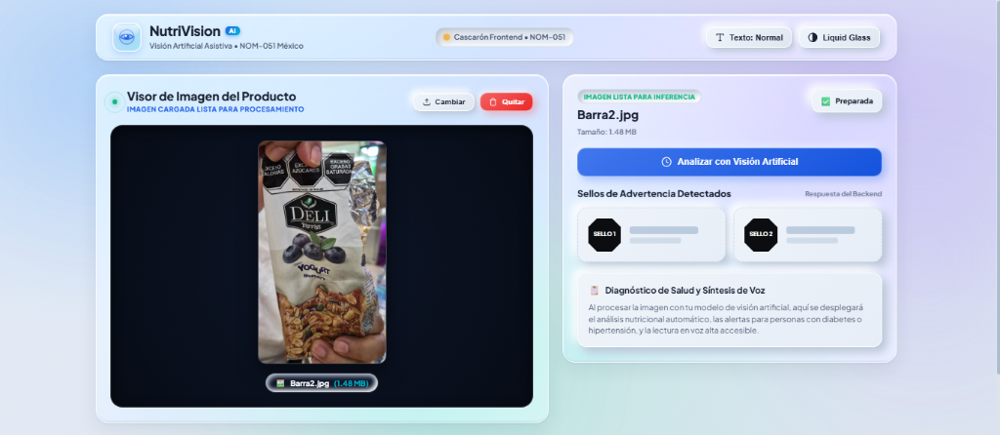

Plataforma de Visión Artificial para asistencia a personas con debilidad visual
NutriVision AI es una herramienta asistiva para personas con debilidad visual enfocada en identificar sellos de advertencia de la NOM-051 en productos comerciales en México. Se desarrolló el cascarón de la interfaz en Angular 22 con estilos Neumorphism 2.0 y Liquid Glass, estructurado para enviar la imagen hacia un backend en Python para su procesamiento.
Repositorio de imágenes de productos comerciales mexicanos con sellos oficiales de advertencia:

Figura 1: Cascarón de NutriVision AI mostrando la subida del producto real ("Barra2.jpg", 1.48 MB) y los cascarones preparados para la inferencia en Python.
Dropzone interactivo que permite arrastrar y soltar o seleccionar fotos de empaques con borde de cristal líquido.
Servicio en Python (FastAPI/OpenCV/YOLO) que recibirá la imagen vía HTTP POST para detectar y clasificar los sellos.